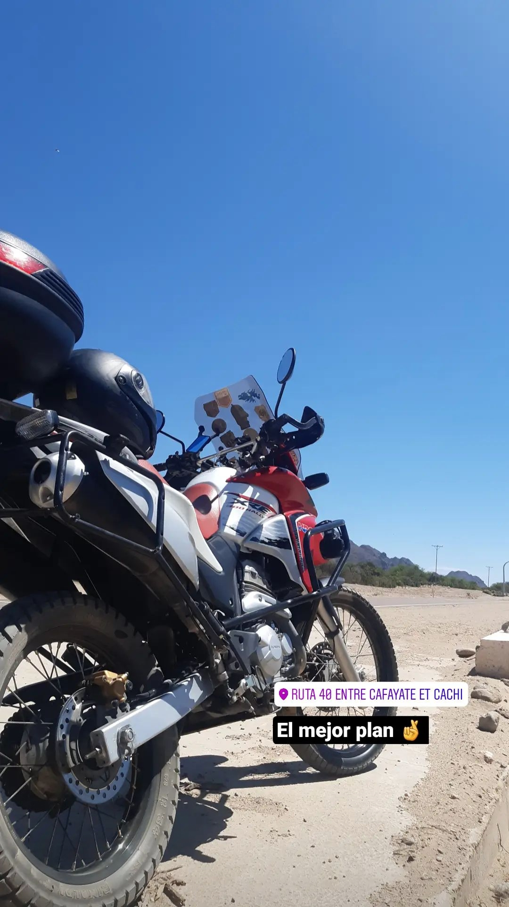
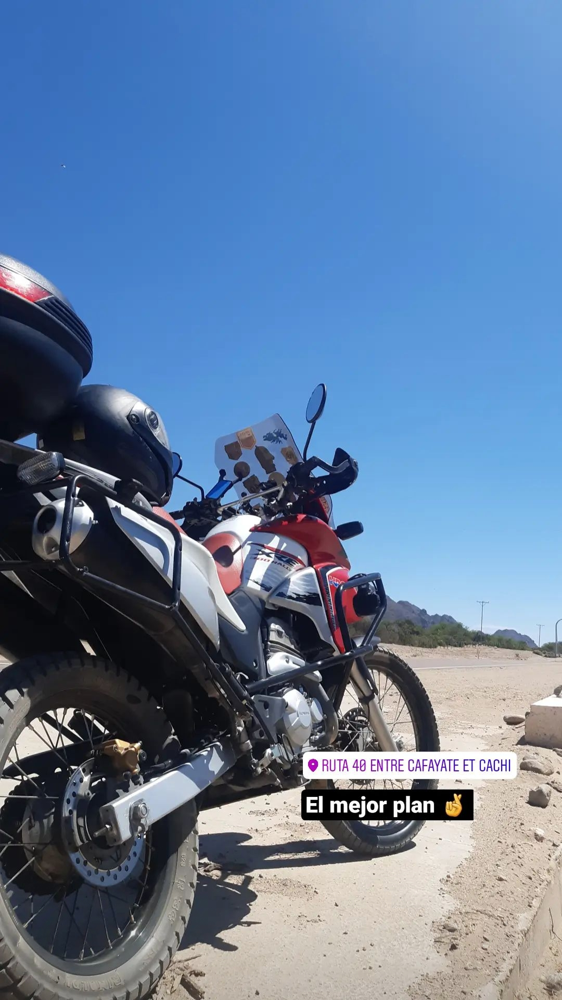
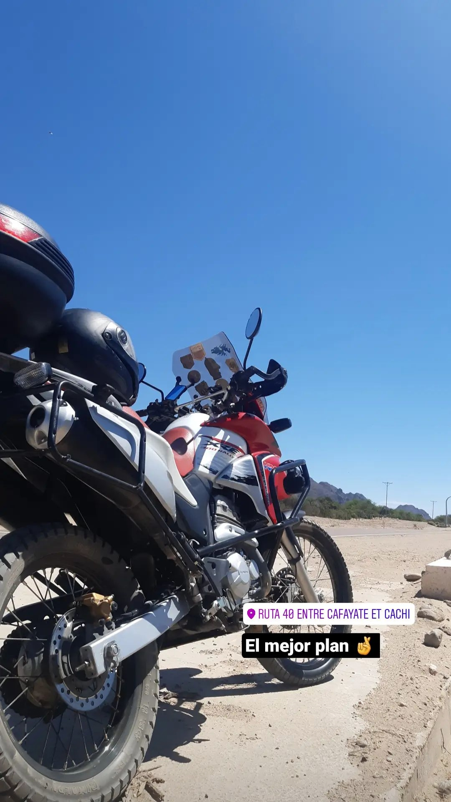

En este sector lo voy a dedicar para contar un poco sobre mi, algo dificil para mí porque no soy una persona muy abierta a con los demas. Algo que destaco de mí persona son mis pensamientos claros ya que me ayuda a tomar buenas decisiónes con respecto a mi vida estudiantil y juvenil. Por supuesto que este pensamíento que adquirí fue gracias a muchas personas que me ayudaron y me aconsejaron a lo largo de mis 21 años, bueno algo que no dije es que tengo 21 años, lastimamente cumplo el 30 de Diciembre, triste!. Es una fecha que no me gusta mucho jaja. En fin para no alargar esta parte introductoria terminare afirmando que las cosas que me encuentro haciendo actualmente y la carrera que elejí me gustan demasiado y bueno tengo altas expectativas de algun dia poder trabajar de manera profesional y quien sabé si podre participar en algun gran proyecto con respecto a la tecnologia que creo creo siempre fue uno de mis sueños.
A continuacion detallaré algunas cosas que me encantan hacer y cada ves que las hago me siento vivo y parte de que mi vida tiene algún séntido.
| Días | ||||||
|---|---|---|---|---|---|---|
| Horas | Lunes | Martes | Míercoles | Jueves | Viernes | |
| 8AM a | Lo primero que hago es desayunar, luego termino de ordenar mi cuarto y para finalizar empiezo con tareas pendientes que quedaron de la facultdad. | |||||
| 10AM | ||||||
| 10AM - 13PM | Termino de hacer mis tareas, me baño y almuerzo preparandome para comenzar las clases | Generalmente hago lo mismo que el lunes, salvo que cocino ya que mi horarios de clases son diferentes | Misma Rutina que el Lunes | Cocino ya que mi horarios de clases son diferentes | ||
| 13PM - 19PM | Me acomodó para salir a tomar el colectivo y preparar mis clases | Como comun a las 15 empiezan mis clases y antes trato de adelantar temas para las prox clases. | Repito rutina del Lunes | Este dia es particular, ya que no tengo clases, en el cual sobre esta horas me dedico a tratar de estar al día con todas las materias | A las 13 tengo que llevar a mi mamá a trabajar y luego de eso termino saliendo para tomar mis clases. | |
| 19PM - 21PM | Sobre estas horas me dedico hacer algo que me guste ami y me distraiga, ya sea salir a caminar con mi perro, andar en moto, etc | |||||
| 21PM - 23PM | Trato de irme a bañar temprano para terminar mi día diario y al final irme a acostar. | |||||
